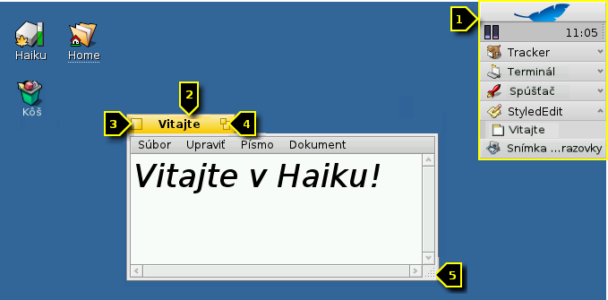
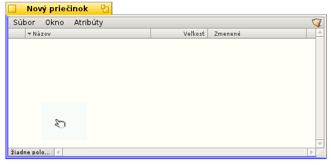
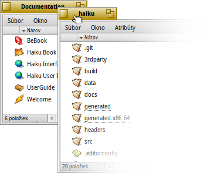
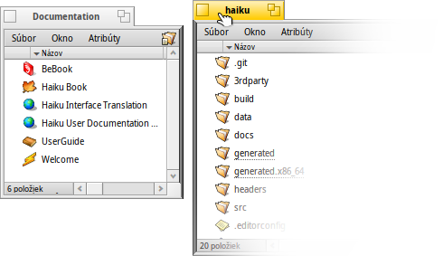
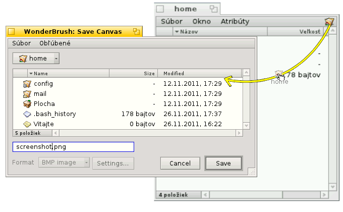
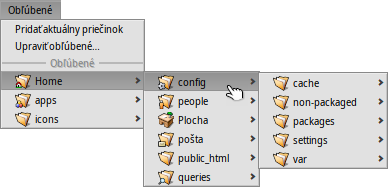

| Obsah |
|
Rýchly spôsob presúvania a zmeny veľkosti okien Skladanie a dlaždice Panely Otvoriť a Uložiť Replikanti |
Používateľské rozhranie Haiku
Haiku's graphical user interface is an integral part of the system. Unlike other Unix-like operating systems, there is no separate window manager and booting just into a command-line shell is not possible. Haiku's focus being on the desktop user, this is just not considered necessary.
Pretože už pravdepodobne máte skúsenosti s inými grafickými prostrediami, preskočme štandardné veci ako menu, kontextové ponuky pri kliknutím pravým tlačidlom, Ťahaj&pusť atď. Pozrime sa namiesto toho na niekoľko jedinečných aspektov grafického používateľského prostredia Haiku.
V grafickom rozhraní Haiku je len niekoľko vecí, ktoré nie sú zjavné a zaslúžia si vysvetlenie.
Panel je ako ponuka „Štart“ a hlavný panel vo Windows. Pozrite sekciu Panel.
- Žltá karta ponúka viac ako len názov programu či súboru:
- Môžete ju presúvať držaním klávesu SHIFT a ťahaním na inú pozíciu, čím môžete pohodlne prepínať medzi rôznymi oknami aj keď sú na sebe.
- Okno môžete minimalizovať dvojklikom na jeho kartu (alebo pomocou CTRL ALT M). K takto skrytému oknu sa dostanete cez jeho položku v Paneli alebo Twitcheri.
- Okno môžete dať preč z popredia pravým kliknutím na jeho kartu (alebo okraj).
Tlačidlo Zavrieť.
The "zoom" button (or CTRL ALT Z). In most applications, this will expand a window to maximum size without obscuring the Deskbar (hold SHIFT to cover the Deskbar as well). It doesn't have to, however. Tracker windows, for example, will resize to best fit the contents.
Okraj okna. Ťahaním myšou presúvate okno. Ťahaním pravým tlačidlom myši meníte veľkosť okna.
Roh na zmenu veľkosti.
 Rýchly spôsob presúvania a zmeny veľkosti okien
Rýchly spôsob presúvania a zmeny veľkosti okien
Pohybovanie a menenie veľkosti tvorí veľkú časť interakcie s viacerými súčasne bežiacimi aplikáciami. Namiesto triafania malej žltej karty alebo ešte menšieho okraja, existuje aj pohodlnejší spôsob ako okno presunúť. Okrem toho, že je roh okna malý, má aj ďalšie obmedzenie: Dovoľuje vám meniť veľkosť iba v smere dolného pravého rohu.
Ťahanie okraja okna pravým tlačidlom funguje, ale znova, museli by ste presne mieriť.
Ako elegantné riešenie tohoto problému ponúka Haiku klávesovú skratku CTRL ALT s použitím myši. Pozrite aj sekciu Skratky a klávesové kombinácie, kde nájdete ďalšie informácie o skratkách na správu okien.
Držanie CTRL ALT zvýrazní okraje najbližšie pri kurzore. Presúvaním myši môžete meniť zvýraznené okraje. Držaním pravého tlačidla myši ťahaním meníte veľkosť okna pozdĺž vyznačených okrajov.
Držaním CTRL ALT a ťahaním ľavým tlačidlom myši hocikde vrámci okna ním môžete hýbať. Rýchlym kliknutím pravým tlačidlom myši vrátite okno do jeho pôvodnej pozície.
Skladanie a dlaždice
Používateľské rozhranie Haikuposkytuje jedinečnú vlastnosť, ktorá dokonale využíva skutočnosť, že okná majú žltú kartu namiesto titulného pruhu plnej šírky. Hovorí sa jej „Skladanie a dlaždice“.
V príklade dolu je okno Trackera so záložkami pridláždené k ľavej strane okna WebPositive, ktoré je samotné zložené s iným oknom Trackera zobrazujúcim priečinok haiku so zdrojovým kódom. V tejto animácii používateľ kliká na karty poskladaných okien, čím ich striedavo vynáša do popredia.

Takto spojené skupiny okien je možné spolu presúvať a meniť ich veľkosť - čo sa hodí v prostredí, kde sa pracuje na viacerých projektoch. Namiesto hľadania správneho okna prehliadača s oknami s dokumentáciou, editorom a Trackerom a možno poštou súvisiacou s jedným s projektov, na ktorých pracujete ich môžete jednoducho poskladať a zdláždiť k sebe.
Samotné aranžovanie okien je jednoduché: Podržte OPT počas ťahania okna za jeho kartu v blízkosti karty alebo okraja iného okna, pokým sa nevysvieti a následne pusťte tlačidlo myši.
Skladanie a dlaždice pozostávajú z dvoch súvisiacich častí.
|  | „Skladanie“ je dávanie okien na jedno na druhé, pričom sa žlté karty automaticky presúvajú na miesto. |
|  | „Dláždenie“ znamená lepenie okien dohromady vo vodorovnom alebo zvislom smere. |
Oddeľovanie prebieha rovnako - podržaním klávesu OPT a odtiahnutím okna za jeho kartu zo skupiny.
Panely Otvoriť a Uložiť
Pri otváraní alebo ukladaní súboru z aplikácie sa otvorí takýto panel:
Má všetko, čo by ste čakali: Zoznam súborov na výber z aktuálneho priečinka, v prípade ukladania aj textové pole, do ktorého zadáte názov súboru, a rozbaľovacie menu s ponukou formátov a ich nastavenia.
Z rozbaľovacieho menu hore môžete vybrať nadradený priečinok.
Ak už máte otvorený vami zvolený cieľový priečinok alebo jeho reprezentáciu (symbol úplne vpravo v jeho paneli menu), môžete ho jednoducho pretiahnuť myšou do panela. Panel tak zmení svoju lokalitu na daný priečinok.
Klávesové skratky
Veľa skratiek v paneli otvárania a ukladania sú tie isté, ktoré sú použité aj v Trackeri. Okrem príkazov dostupných z menu existujú ešte nejaké, ktoré nie sú také zjavné:
| ALT N | Vytvorí nový súbor. | |
| ALT E | Umožní premenovanie označenej položky. | |
| ALT ↑ | Presunie položku do nadradeného priečinka. | |
| ALT ↓ alebo ENTER | Vstúpi do označeného priečinka. | |
| ALT D | Vráti vás na plochu. | |
| ALT H | Vráti vás do domovského priečinka. |
Klávesové skratky v Haiku vo všeobecnosti popisuje Klávesové skratky a kombinácie.
Priečinky Obľubené a Nedávno použité
Menu vám v paneli otvárania a ukladania ponúka nedávno navštívené priečinky a obľúbené lokality, ktoré si môžete sami nastaviť. Šípka indikuje, že sa môžete cez tieto súbory dostať hlbšie do hierarchie pomocou submenu.
Ak si chcete pridať súbor medzi Obľúbené, jednoducho v ňom z menu vyberte . Odteraz sa tento priečinok objaví v každom paneli otvárania/ukladania. Ak chcete priečinok z Obľúbených odstrániť, vyberte a vymažte jeho položku.
Všetky Obľúbené sú uložené v /boot/home/config/settings/Tracker/Go/. Tam môžete rovno pridávať alebo odstraňovať odkazy na súbory a priečinky.
Replikanti
Replikanti sú malé samostatné súčasti aplikácií, ktoré sa dajú integrovať do iných programov. Po aktivovaní možnosti Panela môžete rozoznať aplikácie s replikantom podľa tejto malej rúčky v pravom dolnom rohu:

Najprominentnejšie miesto na použitie replikantov je Plocha: Jednoducho na ňu myšou pretiahnite rúčku replikanta. Odteraz je táto aplikácia súčasťou Plochy a ak s ňou chcete pracovať, pôvodnú aplikáciu už nemusíte spúšťať.
Pravým kliknutím na rúčku replikanta vyvoláte menu s možnosťami zobraziť ďalšie informácie alebo .
Možnosť vytvoriť replikanta majú napríklad aplikácie Monitor aktivity, aplet Pracovné plochy alebo DeskCalc.